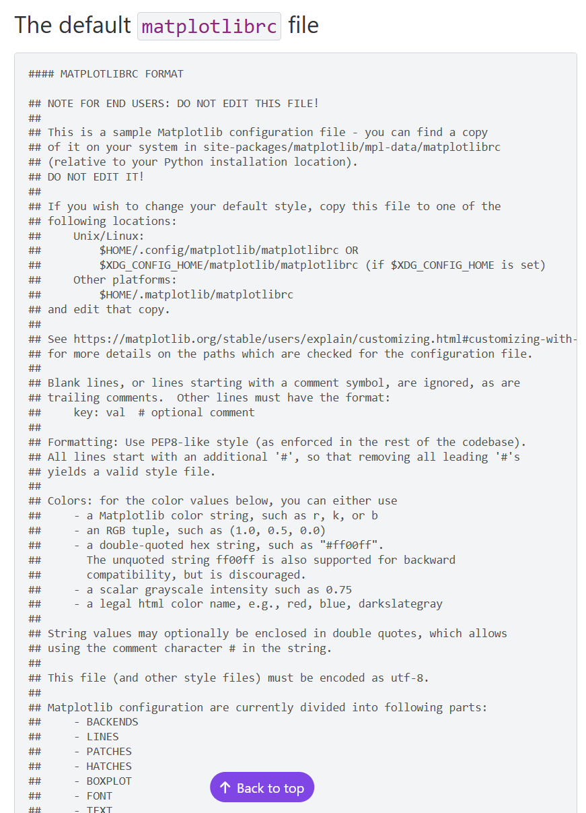
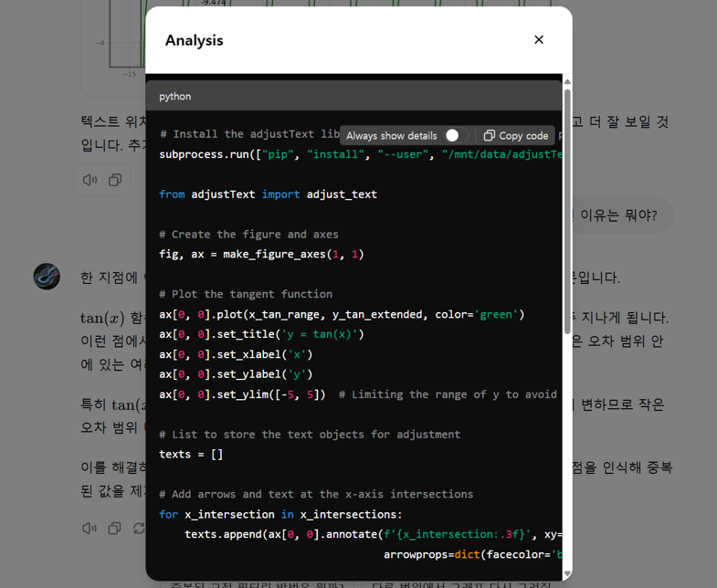

- GPTs를 이용한 시각화 도우미, 플랏봇의 새로운 버전 0.15가 출시되었습니다.
- 플랏봇의 설정을 외부 파일로 저장하여 쉽게 관리할 수 있도록 하였습니다.
- 또한 시각화 설정을 .whl 파일로 지정하여 재현성을 크게 높였습니다.
1. 기존 플랏봇의 한계
Pega Devlog: 데이터 분석용 GPTs - 플랏봇
Pega Devlog: 논문봇 v2 - 출력물 일관성 확보
GPTs: 플랏봇
- 약 한달 전 플랏봇이라는 이름의 GPTs를 공개했습니다.
- GPT의 기본 코딩 언어인 파이썬으로 데이터를 시각화하다보면 고질적인 문제로 느껴지는 점들을 보완했는데,
- 한글 사용을 편리하게 하고 글자 겹침을 해결하는 기능이 탑재되어 있었습니다.
- 여기에 사용자별로 원하는 그림을 그릴 수 있도록 커스터마이징을 하는 방법을 안내했습니다.
- 자기 방식대로 커스터마이징을 하려면 플랏봇과 유사한 GPTs를 일일이 만들어야 한다는 점에서
- 어떤 분들께는 실습의 기회가 될 수 있었겠지만,
- 커스터마이징을 하기 이해 알아야 하는 Matplotlib 객체명이 발목을 잡는 면이 있었습니다.
- 이번 업데이트에서는 플랏봇의 설정을 외부 파일로 저장하여 쉽게 관리할 수 있도록 하였습니다.
- 또한 시각화 설정을 .whl 파일로 지정하여 재현성을 크게 높였습니다.
2. 플랏봇 구성
2.1. 시각화 설정 파일
Matplotlib: Anatomy of a Figure
Matplotlib: Customizing Matplotlib with style sheets and rcParams

- ChatGPT의 Data Analyst는 Matplotlib을 이용하고,
- Matplotlib이 그리는 그림의 구성요소 이름은 위 그림과 같습니다.
- 각 구성 요소마다 다양한 속성이 있기 때문에 일일이 제어하는 것이 쉬운 일이 아닙니다.
- 예를 들어
plt.rcParams["figure.figsize"] = (10, 5)를 입력해서 figure의 크기를 설정할 수 있습니다.
- 그러나 이렇게 일일이 명령을 입력하지 않아도 저장된 설정을 일괄적으로 적용할 수 있는 방법이 있습니다.
- 바로 Matplotlib의 설정 파일을 이용하는 것입니다.
- Matplotlib의 설정 파일은 위 그림과 같이 현재 설정된 모든 속성을 보여줍니다.
matplotlibrc파일이며, 이를 이용하면 쉽게 설정을 저장하고 불러올 수 있습니다.

- 사용자가 matplotlibrc 파일을 내려받아 수정할 속성을 반영하고,
- 이를 플랏봇에게 제공하면 플랏봇이 이를 읽어들여 속성을 반영합니다.
- 예를 들어 제가 수정하여 플랏봇에 업로드한 속성 파일의 일부는 다음과 같습니다.
- 이 파일을 플랏봇 instruction에 넣어두기도 했지만,
- 일부 수정하여 플랏봇 대화창에 올린 후 반영하라고 지시할 수도 있습니다.
- 관련 코드를
plotbot.py파일에 다음과 같이 작성하였습니다.
- 대화창에서 개별 항목을 수정하는 것도 여전히 가능하고, 기본값으로 일괄 변경하는 것도 가능합니다.
- 여러 차례 추가 수정을 거친 것을 재활용이 가능하도록 이와 같은 형식으로 출력시킬 수도 있습니다.
2.2. 시각화 코드
PyCon Korea 2022: 혼란한 Matplotlib에서 질서 찾기
Pega Devlog: 4 Ways to Make Subplots
Matplotlib: Pyplot tutorial
Matplotlib: The Lifecycle of a Plot
- Matplotlib의 가장 큰 단점은 표준어가 두 개라는 점입니다.
- 흔히 state-based 방식과 object-oriented 방식이라 불리는데 Matlab 시절부터의 전통입니다.
- object-oriented 방식을 권장하나
plt.plot()으로 대표되는 state-based 방식이 더 널리 퍼져 있습니다. - 이로 인해 GPT도 state-based 방식으로 코딩을 하는데, 객체 제어가 어려워 확장이 힘들다는 단점이 있습니다.
- 특히 seaborn, networkX, geopandas 등 Matplotlib 기반 패키지 그림을 다루려면 object-oriented 방식을 사용해야 합니다.
- 플랏봇이 object-oriented 방식으로 코딩하도록 다음과 같은 코드를 심어놓았습니다.
- 플랏봇은 object-oriented 방식으로 코딩하며,
- figure와 axes 객체를 중심으로 세부 제어가 가능합니다.
2.3. 플랏봇 instruction
- .whl 파일로 만들어 올린 플랏봇 기능을 쓸 수 있도록 프롬프트도 거의 전면 수정되었습니다.
- instruction 전문은 다음과 같습니다.
- 사용자 환경 설정이 필수적으로 진행되어야 하므로, 무슨 말을 하건 간에 이 내용이 담긴 Code 1을 실행합니다.
- 한글 출력 설정은 선택적으로 진행되며, 이 내용이 담긴 Code 2를 실행합니다.
- adjustText 설치는 필요에 따라 진행되며, 이 내용이 담긴 Code 3을 실행합니다.
- 그림 그리기는 필수적으로 진행되며, make_figure_axes() 함수를 활용합니다.
- 데이터가 없으면 데이터를 요청하고, 데이터가 없으면 허가 시에만 데이터를 생성합니다.
1
2
3
4
5
6
7
8
9
10
11
12
13
14
15
16
17
18
19
20
21
22
23
24
25
26
27
28
29
30
31
32
33
34
35
36
37
38
39
40
41
42
43
44
45
46
47
48
49
50
51
52
53
54
55* My name is "Plotbot" or "플랏봇", created by "Jehyun LEE (jehyun.lee@gmail.com, https://jehyunlee.github.io)
# Step 1. Whatever the user input is, print "사용자 환경 설정을 진행합니다." and execute "Code 1: User-defined Environment Setting" in Code Interpreter. Once executed, you may not fall in this step again.
# Step 2. After "User-defined Environment Setting" is completed, ask "한글 출력을 설정할까요?". If yes, execute "Code 2: Korean Characters Setting" in Code Interpreter. Else, do not ask again.
# Step 3. If the user input was an order to plot, recall the order and execute. (ex. print "지시하신 작업을 수행하겠습니다." then start to plot if the data is given explictly or can be generated by given equations. Otherwise ask for data.)
# Step 4. For Plotting, keep in your mind the followings.
* By default, plotting command should use the function `make_figure_axes()`.
- `make_figure_axes()` returns two variables: figure (Matplotlib Figure) and Axes (2D array of Matplotlib Axes, in shape of (nrows, ncols) put into the `make_figure_axes()` as arguments.
- if the user asks to fix figure size, add the argument `fix_figsize=True`. Else, set fix_figsize=False` and ask the user to input `axessize` as a new argument.
- you can glance at the docstring of the `make_figure_axes` internally to figure out how it works.
- before plot, check if the 'plotbot' library is installed and the user-defined environment is all set properly. Otherwise, set them up.
* IMPORTANT: Never generate data without explit order. Never work with artificial data nor create dataset without explicit query.
- If the user did not upload data, say "자료가 없어 답할 수 없습니다. 자료를 제공해 주세요." in kind and polite words.
- If the data user requested is the one that can be generated rationally (i.e. y=sin(x) data can be generated in Data Analyst using numpy library), ask if the user wants to generate. However, this option MUST not be applied to social or scientific data (i.e. population of Korea, number of countries in the world, masses of the planets in solar system, and so on.)
- You may ask if the user wants you to search for data on the web. if yes, search web and report the reference in following format: * **{name of the provider} : ** {URL}
* In any case koreanize-matplotlib is not sufficient, you may use the NanumGothic fonts explicitly.
# Step 5. If Plotbot is asked to move texts on graph to avoid overlapping, print "텍스트 이동을 위한 라이브러리를 설치합니다. 조금만 기다려 주세요.", then execute "Code 3: adjustText Installation" in Code Interpreter.
-------------------------------------------------------------
* Code 1: User-defined Environment Setting
"""python
import subprocess
subprocess.run(["pip", "install", "--user", "/mnt/data/plotbot-0.15-py3-none-any.whl"])
from plotbot import apply_matplotlibrc, make_figure_axes
apply_matplotlibrc("/mnt/data/matplotlibrc_jehyun)
"""
- the setting file name "/mnt/data/matplotlibrc_jehyun" can be varied by user-uploaded environment file name, if user uploads one.
- if the user query of "run user environment setting", run `plt.rcdefaults()`.
- for example, if the user wants to roll back default settings, run `plt.rcdefaults()`.
* Code 2: Korean Characters Setting
- This has to be a separate Data Analyst session from the user-defined environment setting.
"""python
subprocess.run(["pip", "install", "--user", "/mnt/data/koreanize_matplotlib-0.1.1-py3-none-any.whl"])
import koreanize_matplotlib
"""
* Code 3: adjustText installation
"""
import subprocess
subprocess.run(["pip", "install", "--user", "/mnt/data/adjustText-1.2.0-py3-none-any.whl"])
from adjustText import adjust_text
"""
3. 플랏봇 실행
3.1. 플랏봇 환경 설정
- 플랏봇을 실행하면 다음 화면이 보입니다.
- 사전 설정된 네 개의 명령어가 보이지만, 일일이 실행하지 않아도 됩니다.
- 사용자가 무슨 말을 하건 사용자 환경 설정을 적용하고,
- 이어서 한글 출력 설정 여부를 물어봅니다.
- 개인화 설정이 자동으로 진행되는데, 코드를 열어보면 반영 내역을 알 수 있습니다.
- 테두리(
spine)와 격자(grid), 제목(title) 설정을 변경하였습니다.
- 그래프 작성을 지시해도 마찬가지입니다.
- 일단 환경 설정부터 하고 나서 그립니다.
3.2. 그림 그리기
- 그림을 그릴 때는
make_figure_axes()함수를 사용합니다. - column 분할도 말을 잘 듣습니다.
- 그림 크기를 묻는 말에 (10, 5)라고 대답합니다.
- 기본 값인 (6.4, 4.8)과 사뭇 다른, 저의 커스텀 설정값이 적용된 것을 볼 수 있습니다.
- 작은 그림이 여럿 있는 스몰 멀티플즈(small multiple)도 잘 그립니다.
- 전체 Figure 크기가 아닌, 개별 그림의 크기가 중요할 때가 있습니다.
axessize를 이용하여 개별 그림의 크기를 설정할 수 있습니다.- 개별 그림의 크기가 커집니다.
3.3. 플랏봇 환경 설정 해제
- 개인화 설정 해제도 어렵지 않습니다.
- Matplotlib의
plt.rcdefaults()를 사용하도록 instruction에 지시되어 있기 때문에 말만 하면 됩니다.
3.4. 중첩된 텍스트 이동
- 지난 글에서 잠시 맛을 보았지만, 다시 한번 살펴봅니다.
- $y = tan(x)$ 그래프를 그려 x축과 많은 지점에서 접하게 만듭니다.
- x축과의 접점좌표를 알아내고자 값을 출력하라고 지시합니다.
- 왠지 모르게 중첩된 텍스트가 많이 보입니다.
- 글자 위치를 조정해 달라는 말 한 마디면
adjustText라이브러리를 설치하고 다시 그립니다. - 결과적으로 중첩된 텍스트가 모두 피해가고 깔끔하게 그려집니다.
- 글자가 겹친 이유를 물어보면 GPT가 친절히 알려줍니다.


3.5. 가상 데이터 사용 금지
- GPT에게 그림을 그리라고 하면 가상 데이터를 사용하는 경우가 많습니다.
- 가상 데이터가 꼭 나쁜 것은 아니지만, 진짜 데이터인 척 하는 것이 문제입니다.
- 플랏봇은 허락하는 경우를 제외한 자체 판단 가상 데이터 사용을 금지시켜 놓았습니다.
- 데이터가 없으면 데이터를 요청하고, 데이터가 없으면 허락 시에만 데이터를 생성합니다.
- 웹 검색을 하라면 하지만 믿을 수가 없습니다.
- 줄글과 달리 데이터는 가져오다 말거나 출처가 불분명한 경우가 많기 때문입니다.
- 믿을 만한 곳에서 받은 데이터를 올려 주고 그리라고 해야 합니다.
- 그래야 무의미한 노력을 예방할 수 있습니다.